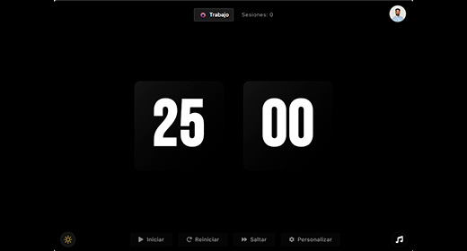
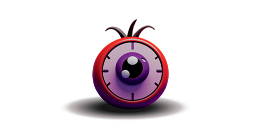

Ingeniero de Telecomunicación · DevOps & Cloud
Ingeniero de Telecomunicación · Firmware embebido (C), automatización de pruebas (Python) · Formándome en DevOps & Cloud.
Ingeniero de Telecomunicación especializado en sistemas, con experiencia en desarrollo de software y sistemas embebidos. Experiencia en integración de sistemas electrónicos complejos, desarrollo de firmware en C y automatización de herramientas de validación en Python en entornos de ingeniería avanzada.
Actualmente trabajo en Indra en el área de sistemas de guerra electrónica, colaborando con equipos multidisciplinares de hardware, software y sistemas. En paralelo, he cursado el Programa Avanzado en DevOps & Cloud (UNIR), aplicando Docker, Kubernetes, Terraform, Jenkins y Ansible en entornos cloud (AWS y Azure).
Busco entornos donde los problemas sean técnicamente exigentes, las buenas prácticas de ingeniería marquen la diferencia y haya margen real para seguir creciendo.
Desarrollo e integración de sistemas de guerra electrónica. Desarrollo y depuración de firmware en C para sistemas embebidos. Automatización de herramientas de validación en Python. Simulación y análisis de señal con MATLAB. Instrumentación electrónica avanzada: osciloscopios, analizadores vectoriales y generadores de señal.
Sistema de detección acústica basado en arrays de micrófonos MEMS. Adquisición de señales con LabVIEW, procesamiento con Python (NumPy, Pandas) y diseño de redes neuronales profundas con TensorFlow.
Talleres de tecnología para alumnado de Primaria y Secundaria: programación web, Arduino, diseño e impresión 3D y programación con Scratch.
Diseño y desarrollo full-stack del portfolio para la artista Julia Castro. Incluye panel de gestión de contenido.
Estudios
Universidad de Valladolid · 2019 — 2024
UNIR · oct 2025 — may 2026
Docker, Kubernetes, Terraform, Jenkins, Ansible, AWS, Azure.


¿Tienes una oportunidad o quieres saber más? Escríbeme.